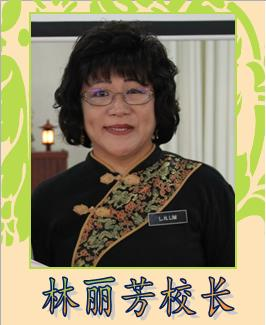

Welcome to SMJK Phor Tay site

Phor Tay High School, or Sekolah Menengah Jenis Kebangsaan Phor Tay, is a secondary school in Lip Sin Garden, Sungai Dua, Penang. It occupies a piece of land between the Silver Jubilee Home and Super Tanker Food Court. It relocated from its original site in Bagan Jermal in 2009. Phor Tay High School in Sungai Dua functions as a co-educational school, providing education to both boys and girls.
The Principal of SMJK Phor Tay
Cik Lim Lay Hong


School badge
The school emblem shape resembles a ship, which means that the purpose of running our school: With a leaf Chi Hang Purdue sentient beings, straight to Bodhi feel shore. School logo with yellow as the end, Cihang made green. Yellow represents Buddhism, while green symbolizes the birth of life.
Visi Sekolah
SMJK Phor Tay beriltizam menjana pelajar cemerlang agar menjadi pihian utama ibu bapa.
Misi Sekolah
Membina budaya pembelajaran yang positif dan persekitaran yang kondusif untuk meningkatkan keberkesaan pengajaran dan pembelajaran demi melahirkan modal insan yang berintelek, berakhlak mulia dan berani berjuang untuk mencapai kecemerlangan.
School Motto

仁"REN"慈爱物，悲天悯人。
Humanity At Phor Tay High School, the welfare of our students is the primary consideration in every area of our operations. We practise the concept of a caring school. We aim to inculcate in students the values of love and kindness towards their fellow students and all members of society.
慎"SHEN"以处事，谨以修己。
Mindfulness We believe in providing an all-round education. We aim to develop students who are academically, spiritually and morally strong.
勤"QIN"于求学，勇于服务。
Diligence We want to instil the value of hard work in our students so that they will be able to achieve their goals in life.
毅"YI"力坚强，百折不挠。
Perseverance Our students will be mentally strong and be able to face any challenges with full confidence.
福智十善法
(一) 孝顺父母
(二) 尊敬师长
(三) 信仰宗教
(四) 用功读书
(五) 亲近善友
(六) 爱护生命
(七) 感恩知足
(八) 诚实爱语
(九) 爱人爱己
(十) 善用时间
Fuzhi Law Treatise
(a) filial piety
(b) respect for teachers
(c) religious beliefs
(d) to study hard
(e) close good friends (do not pay loss of friends)
(f) care for life (no child was killing)
(g) Gratitude contentment (not robbery theft)
(h) honest love language (do not lie misfortune)
(i) lover love their own (do not drink drugs)
(j) good use of time